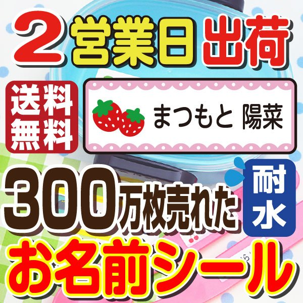
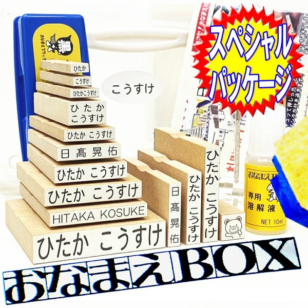
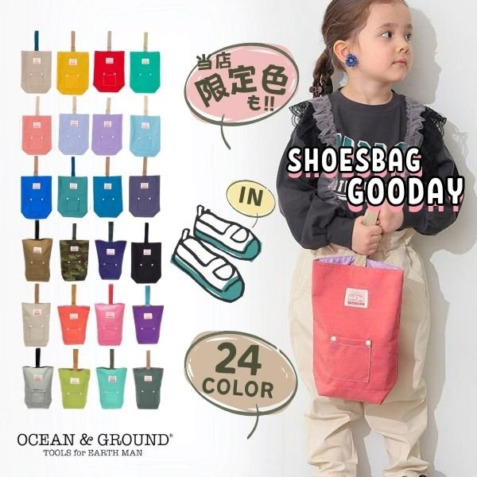
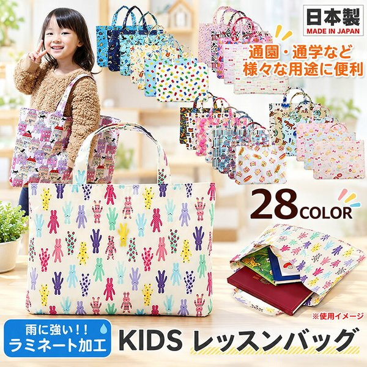
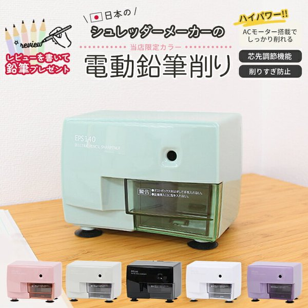
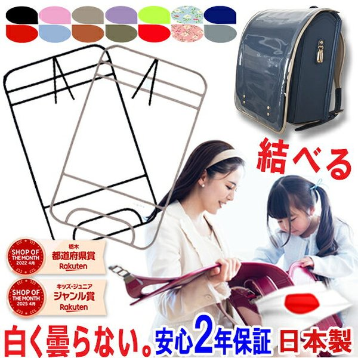
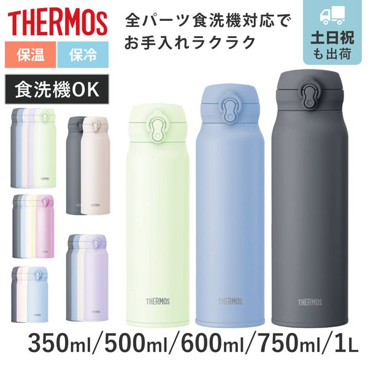
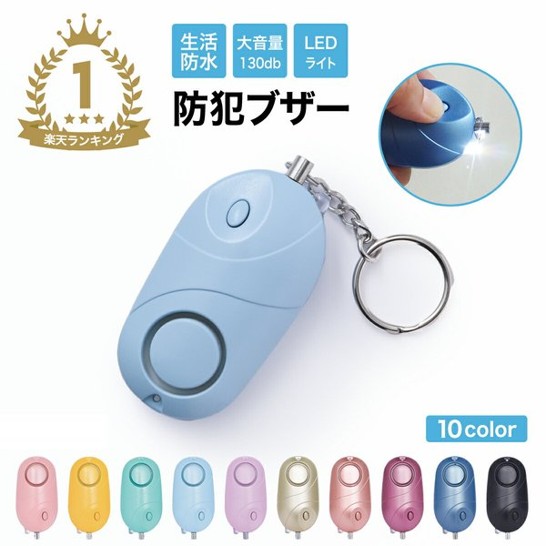
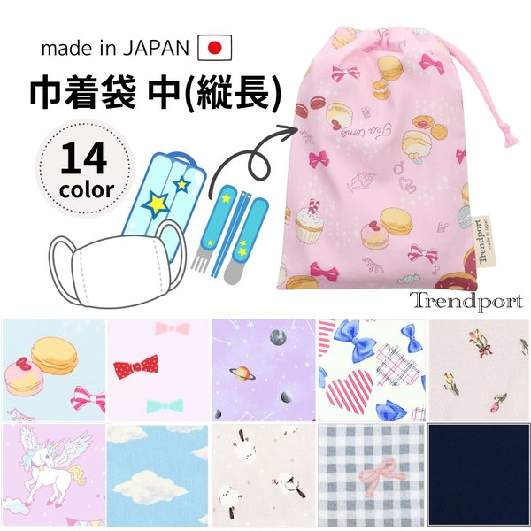
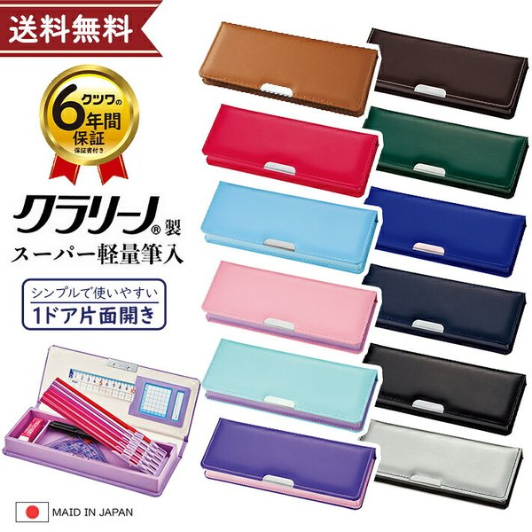

【2026年・入園入学準備10選】お名前シール・お名前スタンプ・上履き入れ・レッスンバッグ・電動鉛筆削り・水筒・防犯ブザーを実売価格で比較
入園・入学の準備は、名前を付ける作業から始まります。上履き、体操服、お箸、水筒、鉛筆。持ち物が増えるほど、名前を書く場所も増えていきます。だから準備でいちばん時間を取られるのは、買い物より名前付けです。
選ぶ軸は3つです。まず名前を付ける道具。お名前シールは貼るだけ、スタンプは布に直接押せるので、持ち物の素材に合わせて選びます。次に毎日使うもの。水筒と筆箱、鉛筆削りは、子どもが自分で扱えるかどうかで朝の支度の速さが変わります。最後に安全と雨の対策。ランドセルカバーと防犯ブザーは、通い始めてから必要性を感じやすい道具です。
本記事では、楽天市場で人気・高評価の入園・入学準備グッズ10選を、実売価格とレビュー評価つきで写真付き紹介します。
- おすすめ10選 スペック・特徴比較表
- BEST 1｜お名前シール 防水・耐水 ノンアイロン（いちごデザイン）
- BEST 2｜おなまえBOX お名前スタンプ スーパーセット
- BEST 3｜Ocean&Ground シューズバッグ GOODAY
- BEST 4｜フジキ レッスンバッグ ラミネート加工
- BEST 5｜アスカ 電動鉛筆削り器 エコ EPS140
- BEST 6｜イトヤスタイル ランドセルカバー 結べるタイプ
- BEST 7｜サーモス 真空断熱ケータイマグ JNL-S
- BEST 8｜STAR FOCUS 防犯ブザー 130dB
- BEST 9｜トレンドポート 巾着袋 給食袋（縦長）
- BEST 10｜クツワ クラリーノ筆箱 スーパー軽量 片面
- 【読者負担0円】買わなくても得する無料サービス
- まとめ：入園入学準備10選の選び方
| 順位 | 商品名 | ブランド | 最大の特徴・おすすめ理由 | 総合評価 |
|---|---|---|---|---|
| BEST 1 | お名前シール 防水・耐水 ノンアイロン（いちごデザイン） | お名前シール工場 | 貼るだけで布にもプラスチックにも使える | 4.76 |
| BEST 2 | おなまえBOX お名前スタンプ スーパーセット | おなまえBOX | ひらがなからローマ字まで1箱に揃う | 4.73 |
| BEST 3 | Ocean&Ground シューズバッグ GOODAY | Ocean&Ground（オーシャンアンドグラウンド） | 24色から選べる | 4.63 |
| BEST 4 | フジキ レッスンバッグ ラミネート加工 | フジキ | 雨に強いラミネート加工 | 4.68 |
| BEST 5 | アスカ 電動鉛筆削り器 エコ EPS140 | アスカ（ASKA） | 差し込むだけで自動で削れる | 4.49 |
| BEST 6 | イトヤスタイル ランドセルカバー 結べるタイプ | イトヤスタイル（ITOYA STYLE） | 白化しにくい透明素材 | 4.61 |
| BEST 7 | サーモス 真空断熱ケータイマグ JNL-S | サーモス（THERMOS） | 全パーツ食洗機対応で手入れが楽 | 4.66 |
| BEST 8 | STAR FOCUS 防犯ブザー 130dB | STAR FOCUS | 130dBの大音量 | 4.39 |
| BEST 9 | トレンドポート 巾着袋 給食袋（縦長） | トレンドポート | 縦長でお箸ケースが入る | 4.73 |
| BEST 10 | クツワ クラリーノ筆箱 スーパー軽量 片面 | クツワ | クラリーノで軽く丈夫 | 4.73 |
お名前シール 防水・耐水 ノンアイロン（いちごデザイン）

貼るだけで使えるお名前シールです。アイロンを使わずに布やプラスチックに貼れて、食洗機や電子レンジにも対応しています。いちごのイラストが入ったデザインで、名前を書く欄が大きく、低学年の子どもでも自分の持ち物を見分けやすいです。楽天市場での実売価格は約1,280円（2026年11月時点）。
- 貼るだけで布にもプラスチックにも使える
- 食洗機・レンジ対応で毎日洗う物にも貼れる
- 名前欄が大きく見分けやすい
- 布に貼る場合は、洗濯表示と素材を確かめてから貼る
おなまえBOX お名前スタンプ スーパーセット

ひらがな・漢字・ローマ字のスタンプと油性スタンプ台をまとめたセットです。アイロンを使わずに布へ押せるので、上履きや体操服、おむつにも名前を付けられます。付属品を選べるので、必要な組み合わせで揃えられます。楽天市場での実売価格は約2,980円（2026年11月時点）。
- ひらがなからローマ字まで1箱に揃う
- 布やおむつに直接押せる
- 付属品を選んで組み合わせられる
- スタンプ台のインクが乾いたら補充が必要
Ocean&Ground シューズバッグ GOODAY

ナイロン製のシューズバッグです。24色から選べるので、子どもの好きな色に合わせられます。ファスナー式で出し入れしやすく、上履き入れや体育館シューズの袋として使えます。同シリーズの巾着と揃えると、持ち物の色がまとまります。楽天市場での実売価格は約1,450円（2026年11月時点）。
- 24色から選べる
- ナイロン製で軽い
- ファスナー式で出し入れしやすい
- 大きなサイズの靴は入りにくい
フジキ レッスンバッグ ラミネート加工

日本製のレッスンバッグです。表面をラミネート加工してあるので、雨や汚れをふき取りやすく、毎日持ち歩いても傷みにくい作りです。内ポケットとお名前タグが付いていて、ハンカチや連絡帳を分けて入れられます。楽天市場での実売価格は約1,716円（2026年11月時点）。
- 雨に強いラミネート加工
- 日本製で縫製がしっかりしている
- 内ポケットとお名前タグ付き
- ラミネート生地は折りぐせが付くと戻りにくい
アスカ 電動鉛筆削り器 エコ EPS140

コンセントにつないで使う電動鉛筆削りです。鉛筆を差し込むと自動で削れ、削りすぎを防ぐ機能と芯先の太さを選ぶ調整機能が付いています。底には吸盤があり、削っている間に本体が動きにくいので、子どもが自分で使うときも安定します。楽天市場での実売価格は約3,480円（2026年11月時点）。
- 差し込むだけで自動で削れる
- 削りすぎ防止と芯先調整付き
- 吸盤で本体が動きにくい
- コンセントコードが届く場所に置く必要がある
イトヤスタイル ランドセルカバー 結べるタイプ

透明で白くならない素材のランドセルカバーです。紐で結べるタイプなので、ランドセルに装着しても外れにくく、雨や傷から本体を守ります。日本製で2年保証が付き、くすみカラーのバリエーションから選べます。楽天市場での実売価格は約1,300円（2026年11月時点）。
- 白化しにくい透明素材
- 結べるタイプで外れにくい
- 日本製で2年保証付き
- 取り付けはランドセルの形に合わせて紐の長さを調整する
サーモス 真空断熱ケータイマグ JNL-S

サーモスの真空断熱ボトルです。350mlから1Lまで容量を選べ、ワンタッチでフタが開く直飲みタイプなので、子どもでも片手で飲めます。全パーツが食洗機に対応しているので、毎日の手入れが簡単です。楽天市場での実売価格は約2,980円（2026年11月時点）。
- 全パーツ食洗機対応で手入れが楽
- 350ml〜1Lから容量を選べる
- 保冷・保温の両方に使える
- 容量ごとにカバーの有無が違うので、選ぶときに確認する
STAR FOCUS 防犯ブザー 130dB

130dBの大音量が出る防犯ブザーです。LEDライトが付いていて、暗い道でも手元を照らせます。生活防水で、電池が付いて届くので、ランドセルに付ければその日から使えます。小型で軽いため、通学バッグの肩ベルトにも負担になりにくいです。楽天市場での実売価格は約1,000円（2026年11月時点）。
- 130dBの大音量
- LEDライト付き
- 電池付きですぐ使える
- 電池式なので、定期的に動作と残量を確かめる
トレンドポート 巾着袋 給食袋（縦長）

日本製の綿の巾着袋です。縦長の形なので、お箸ケースや歯ブラシを立てて入れられ、給食袋として使えます。14色の展開で、お名前タグ付き。マスク入れやなわとび袋としても使える大きさです。楽天市場での実売価格は約699円（2026年11月時点）。
- 縦長でお箸ケースが入る
- 日本製の綿素材
- 14色から選べる
- 布製なので、汚れたときは手洗いでやさしく洗う
クツワ クラリーノ筆箱 スーパー軽量 片面

クラリーノ素材を使った軽量の筆箱です。片面開きの1ドアタイプで、フタを開けたときに鉛筆と消しゴムがすぐ取り出せます。日本製で、無地のシンプルなデザインなので、キャラクターの好みが変わっても長く使えます。楽天市場での実売価格は約1,739円（2026年11月時点）。
- クラリーノで軽く丈夫
- 片面開きで出し入れしやすい
- 日本製のシンプルなデザイン
- 片面タイプなので、収納できる本数は両面式より少ない
この記事の商品を買う前に、まずは無料で得する選択肢をチェック。どれも登録・利用は0円で、無料期間中に解約すれば料金はかかりません。読みたい雑誌がある人、ポイントを貯めたい人、アンケートなら気軽という人、それぞれに合うものを選べます。
初回31日無料・無料期間中に解約すれば0円 → 楽天ポイントモール｜登録無料で毎日ポイ活
買い物なしでもポイントが貯まる無料サービス → 楽天インサイト｜アンケートに答えてポイント
登録無料・すきま時間のアンケートで貯まる → 楽天カード｜年会費永年無料
新規発行・年会費ずっと0円 →
4つのサービスの違いと使い分けは「出費0円で得する！買わずにポイントが貯まる無料サービス厳選4選」でまとめています。
💡 まとめ：入園入学準備10選の選び方
入園・入学の準備は、名前付けの道具を先に決めると一気に進みます。布とおむつにはおなまえBOXのスタンプ、プラスチックや水筒にはお名前シール工場のシール。持ち物は、上履き入れにOcean&Groundのシューズバッグ、手提げにフジキのレッスンバッグ、給食袋にトレンドポートの巾着、筆箱にクツワのクラリーノ。家で使うものはアスカの電動鉛筆削りとサーモスの水筒を揃えると、朝の支度が短くなります。通い始めてから必要になるのはイトヤスタイルのランドセルカバーとSTAR FOCUSの防犯ブザーなので、入学式の前までに用意しておくと安心です。
楽天市場では「5と0のつく日」や「お買い物マラソン」などのキャンペーンに合わせて購入すると、ポイント還元が最大化してお得に手に入ります。ぜひチェックしてみてくださいね。